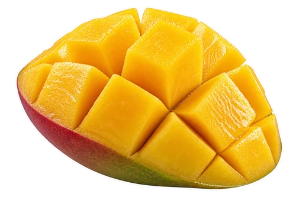
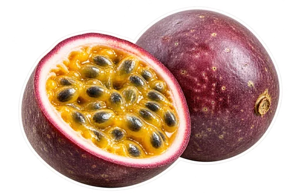

What you will need
Yield: 2 small glasses (about 2 cups). Final volume changes with fruit, straining, and liquid adjustments.

1½ cups ripe mango cubes (about 210 g), fresh or frozen
3 tablespoons unsweetened seedless passion fruit pulp (45 ml)- ½ cup plain yogurt (about 120 g)
- ½ cup cold water (120 ml), plus more as needed
- Optional: 1 teaspoon honey or maple syrup, to taste
How to make it
Prepare peeled mango flesh, removing the stone before cutting into cubes. If using frozen mango, check that the pieces suit your blender and follow the machine’s frozen-fruit guidance.
For fresh passion fruit, scoop the pulp into a fine sieve over a bowl. Gently stir and press the juicy pulp through, leaving the hard seeds behind. Measure 3 tablespoons of the strained pulp.
Put water and yogurt in the blender, then add mango and passion fruit pulp. Blend until smooth, stopping before scraping or redistributing the ingredients.
Taste the smoothie. Add water a tablespoon at a time for a lighter drink, or the optional small amount of sweetener if the passion fruit is too tart for your preference. Blend briefly to combine.
Divide between two small glasses and serve. If you want visible passion fruit seeds as a garnish, keep that separate from the seedless base and use only if you enjoy their texture.
What's in this drink
- Mango: The USDA food record assigns 36.4 mg vitamin C and 0.111 mg copper to 100 g of reference mango. USDA: Mangos, raw.
- Plain dairy yogurt: The USDA food record assigns 0.37 mcg vitamin B12 and 0.142 mg riboflavin (B2) to 100 g of reference plain dairy yogurt. USDA: Yogurt, plain, whole milk.
Nutrient figures are per 100 g of the USDA reference ingredient, not per serving.
The yogurt entry for mango passion fruit smoothie describes whole-milk dairy yogurt, not a plant-based alternative.
Storage
Cover and refrigerate leftovers promptly. Follow the storage directions on opened packaged ingredients. FoodSafety.gov recommends refrigerating perishable food within two hours, or one hour above 90°F, and keeping the refrigerator at 40°F or below.
Short FAQ
Is this smoothie banana-free?
Yes. Mango and yogurt supply the fruit base and creaminess; banana is not in the measured recipe.
Can I blend the passion fruit seeds?
The recipe uses strained, seedless pulp. Including seeds is a separate texture choice, and you should follow your blender’s instructions rather than assuming it will make them disappear.
Can I use mango nectar instead of cubes?
That changes the liquid and fruit balance. Use prepared mango flesh or unsweetened frozen cubes for the measured version, then treat nectar as a separate experiment.